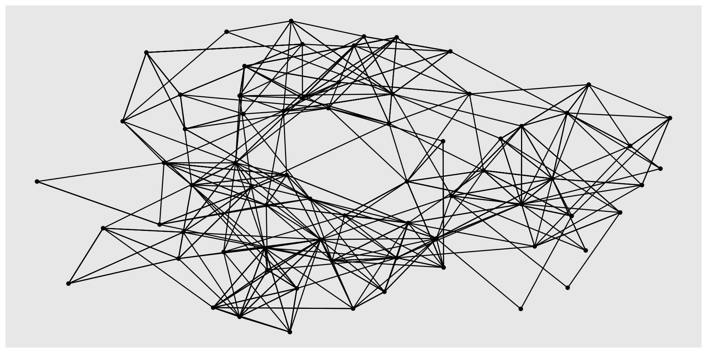
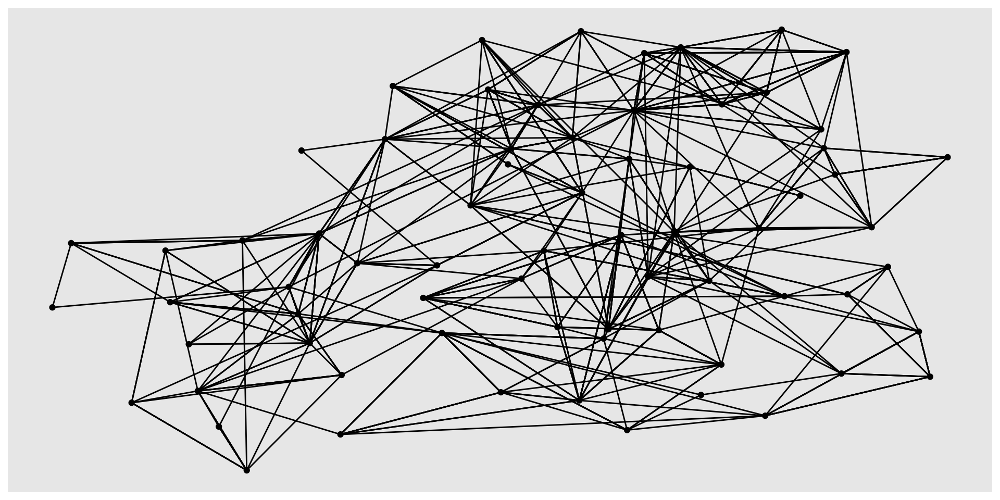
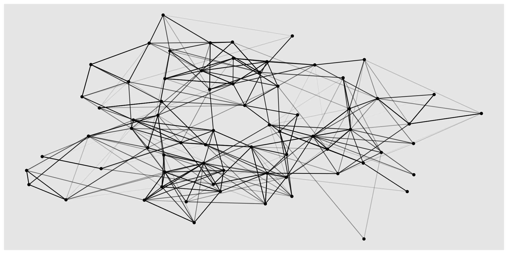
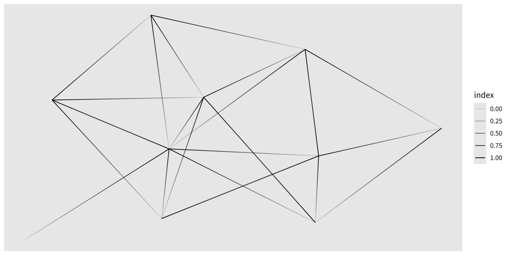
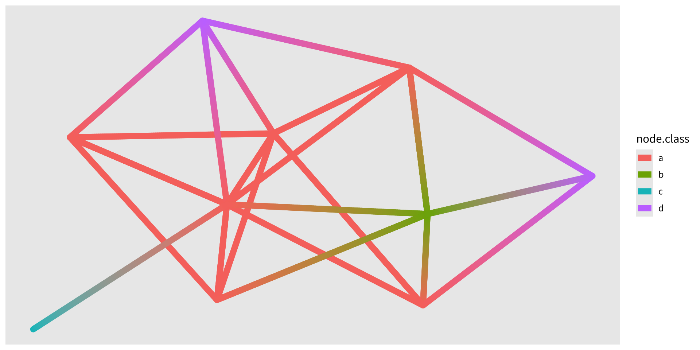
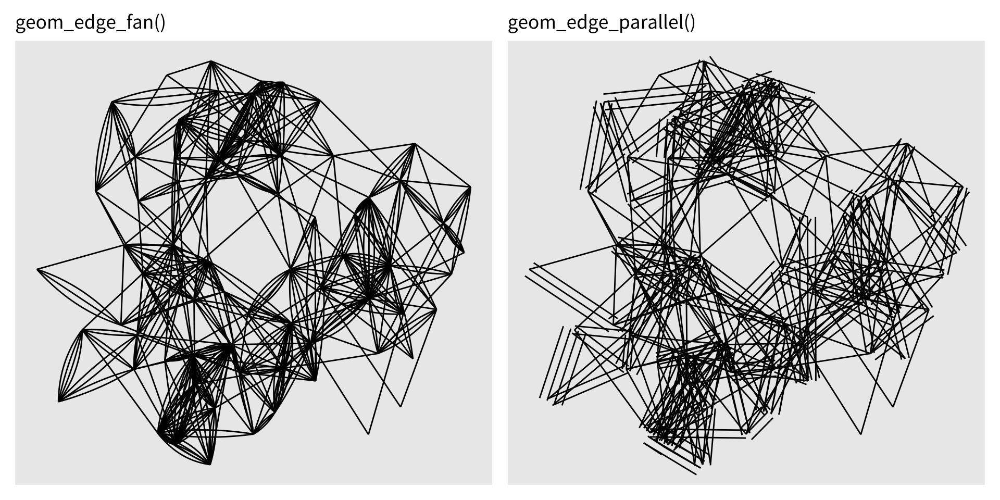
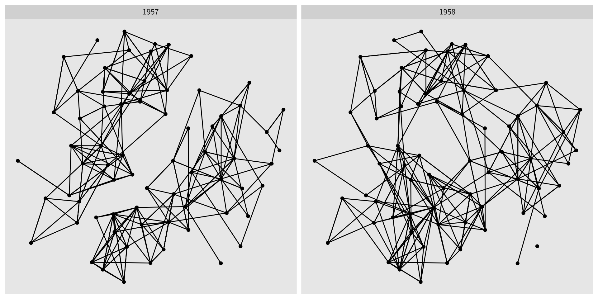
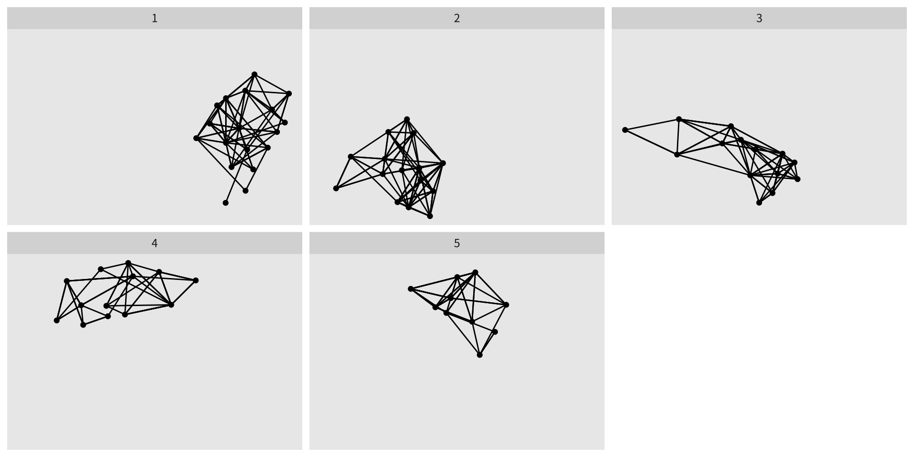

什麼是網路資料？
以數學術語而言，圖（graph） （或網路，network ）是一種由兩個元素組成的資料結構：
節點（nodes） （也稱為頂點，vertices ）——被建模的實體（人、基因、網頁……）。邊（edges） （也稱為連結，links ）——連接節點對的關係（友誼、共同表現、超連結……）。
節點與邊都可能帶有額外的屬性。邊還可額外分類為：
有向（directed） ——關係有明確的來源與目標（例如「為……之子」並不對稱）。無向（undirected） ——關係是對稱的（例如互相的友誼）。
為何網路資料對 ggplot2 是個挑戰
網路資料無法自然地被表示為單一個矩形資料框，而那正是 ggplot2 背後的基本假設。它至少需要兩 個彼此相關的表——一個給節點、一個給邊。tidygraph 套件透過提供一個雙表結構以及一個與 dplyr 相容的 API 來解決這點。ggraph 建立在 tidygraph 之上，為網路提供一套完整的圖形文法。
整潔的網路操作 API
tidygraph 最好被理解為一個用於網路資料的 dplyr 介面 。它公開了分析者已經熟悉的相同動詞（mutate()、filter()、arrange() 等），但把它們套用到一個圖的節點表或邊表上。
下面的例子用 Erdős–Rényi 抽樣模型（play_gnp()）建構一個隨機有向圖，為每個節點指派一個隨機的類別標籤，並依各邊來源節點的標籤把邊排序：
library (tidygraph)library (ggraph)library (ggplot2)library (dplyr)set.seed (42 )<- play_gnp (n = 10 , p = 0.2 ) |> activate (nodes) |> mutate (class = sample (letters[1 : 4 ], n (), replace = TRUE )) |> activate (edges) |> arrange (.N ()$ class[from])
# A tbl_graph: 10 nodes and 26 edges
#
# A directed simple graph with 1 component
#
# Edge Data: 26 × 2 (active)
from to
<int> <int>
1 3 1
2 6 1
3 9 1
4 3 2
5 1 3
6 8 3
7 9 3
8 2 5
9 3 5
10 6 5
# ℹ 16 more rows
#
# Node Data: 10 × 1
class
<chr>
1 a
2 a
3 a
# ℹ 7 more rows
所介紹的關鍵函式
activate(nodes) / activate(edges)——切換「作用中」的脈絡，使後續的 dplyr 動詞分別作用於節點表或邊表。一次只能有一個表是作用中的。
.N()——在邊脈絡的 mutate() 或 filter() 內，.N() 提供對當前圖之節點 資料框的讀取存取。這讓邊屬性能參照節點屬性（例如依各邊來源節點的某個性質把邊排序）。
.E()——在節點脈絡中工作時，提供對邊 資料框的讀取存取。
.G()——提供對整個圖物件的存取。
轉換
網路資料以許多格式出現。tidygraph 提供 as_tbl_graph()，把最常見的 R 網路物件轉換成統一的 tbl_graph 格式。
轉換一個邊清單資料框：
來自 ggraph 的 highschool 資料集記錄了某高中男孩在兩個學年（1957 與 1958）間的友誼提名，儲存為一個三欄的邊清單：
data (highschool, package = "ggraph" )head (highschool)
from to year
1 1 14 1957
2 1 15 1957
3 1 21 1957
4 1 54 1957
5 1 55 1957
6 2 21 1957
<- as_tbl_graph (highschool, directed = FALSE )
# A tbl_graph: 70 nodes and 506 edges
#
# An undirected multigraph with 1 component
#
# Node Data: 70 × 0 (active)
#
# Edge Data: 506 × 3
from to year
<int> <int> <dbl>
1 1 13 1957
2 1 14 1957
3 1 20 1957
# ℹ 503 more rows
轉換一個階層式分群的結果：
as_tbl_graph() 也處理 hclust() 的輸出，自動擷取節點層級的屬性，例如 label、leaf（葉節點）狀態與連結 height（高度）：
<- hclust (dist (luv_colours[, 1 : 3 ]))<- as_tbl_graph (luv_clust)
# A tbl_graph: 1313 nodes and 1312 edges
#
# A rooted tree
#
# Node Data: 1,313 × 4 (active)
height leaf label members
<dbl> <lgl> <chr> <int>
1 0 TRUE "101" 1
2 0 TRUE "427" 1
3 778. FALSE "" 2
4 0 TRUE "571" 1
5 0 TRUE "426" 1
6 0 TRUE "424" 1
7 0 TRUE "425" 1
8 0 FALSE "" 2
9 590. FALSE "" 3
10 1652. FALSE "" 4
# ℹ 1,303 more rows
#
# Edge Data: 1,312 × 2
from to
<int> <int>
1 3 1
2 3 2
3 8 6
# ℹ 1,309 more rows
在轉換時，tidygraph 會保留輸入資料中所有額外的欄位（例如 highschool 的 year 欄，以及分群結果的 label 與 leaf 欄），並自動把它們附加為節點或邊的屬性。
演算法
tidygraph 最強大的特色之一，是它整合的圖演算法 函式庫。這些包括：
中心性（centrality） ——節點重要性的量度（例如度數、中介、PageRank、特徵向量）。排序（ranking） ——把連結良好的節點安排在彼此鄰近的順序。分組／社群偵測 ——依邊的密度把節點劃分成群集。
所有演算法函式都被設計成在 mutate() 內部
範例：PageRank 中心性
下面的程式碼為 graph 的節點表加上一個用 PageRank 演算法計算的 centrality 欄，並依中心性遞減把節點排序：
|> activate (nodes) |> mutate (centrality = centrality_pagerank ()) |> arrange (desc (centrality))
# A tbl_graph: 10 nodes and 26 edges
#
# A directed simple graph with 1 component
#
# Node Data: 10 × 2 (active)
class centrality
<chr> <dbl>
1 a 0.249
2 a 0.217
3 d 0.128
4 a 0.114
5 a 0.0988
6 b 0.0711
7 a 0.0472
8 a 0.0352
9 d 0.0250
10 c 0.015
#
# Edge Data: 26 × 2
from to
<int> <int>
1 1 2
2 4 2
3 8 2
# ℹ 23 more rows
由於演算法在 mutate() 內部以惰性方式求值，它們也可直接在 ggraph 的 aes() 呼叫內被調用——讓繪圖時能即時計算，而不必修改底層的圖物件。
視覺化網路
ggraph 坐落在 tidygraph 與 ggplot2 兩者之上，把圖形文法擴展到網路資料。雖然它的 API 刻意地令人熟悉，但在一個重要面向上，它與標準的 ggplot2 用法不同：大多數網路視覺化不 把變數直接映射到 x 與 y 美學。
取而代之的是，節點的位置由一個布局演算法（layout algorithm） 決定，該演算法利用圖的拓樸來指派（往往在數學上是任意的）x 與 y 座標。這些位置傳達的是結構關係——連通性、階層、群集——而非任何被量測變數的值。
設定視覺化
ggraph 圖以 ggraph() 而非 ggplot() 初始化。其函式簽章為：
ggraph (graph, layout = "..." , ...)
graphtbl_graph，或任何 as_tbl_graph() 能轉換的物件。layouttbl_graph、並回傳至少含 x 與 y 欄（每節點一列）之資料框的自訂函式。...
若省略 layout，ggraph 會根據圖的類型選擇一個合理的預設。
指定一個布局
下面三個例子分別示範：(1) 使用預設布局，(2) 明確指定一個命名的布局，以及 (3) 把邊的權重當作布局引數傳入：
# 預設布局（stress） ggraph (hs_graph) + geom_edge_link () + geom_node_point ()

# 明確的布局：DrL 力導向 ggraph (hs_graph, layout = "drl" ) + geom_edge_link () + geom_node_point ()

# 帶邊權重的布局；邊的 alpha 編碼權重 <- hs_graph |> activate (edges) |> mutate (edge_weights = runif (n ()))ggraph (hs_graph, layout = "stress" , weights = edge_weights) + geom_edge_link (aes (alpha = edge_weights)) + geom_node_point () + scale_edge_alpha_identity ()

關於布局選擇的告誡
網路布局以其製造出結構視覺印象——群集、階層或密集樞紐——的能力而著稱，而那些印象可能並不反映資料中的真實型態。相同的圖在不同布局下可能看起來截然不同。在為出版定下一個布局之前，務必探索多個布局，並對只在單一布局中出現的表面型態抱持懷疑。
環狀化
某些布局支援 circular = TRUE 引數，把節點安排成環狀而非平坦的平面。在 ggraph 中達成這點的正確方式是透過布局參數，而非 透過 coord_polar()。使用 coord_polar() 會在重新定位節點之餘，也把邊 彎曲，而這幾乎從不是我們想要的：
library (patchwork)<- ggraph (luv_graph, layout = "dendrogram" , circular = TRUE ) + geom_edge_link () + coord_fixed () + ggtitle ("circular = TRUE（正確）" )<- ggraph (luv_graph, layout = "dendrogram" ) + geom_edge_link () + coord_polar () + scale_y_reverse () + ggtitle ("coord_polar()（邊被彎曲——應避免）" )| p2
繪製節點
ggraph 中所有繪製節點的 geoms 都共用 geom_node_ 前綴。主力是 geom_node_point()，它把每個節點呈現為一個點——概念上類似 geom_point()，但有三個所有節點與邊 geoms 都共有的重要差異：
x 與 y 是隱含的aes() 中指定。filter 美學FALSE 時會抑制特定節點的繪製，而不把它們從邊所使用的圖結構中移除。在 aes() 內呼叫演算法 ——任何 tidygraph 演算法都可直接在 aes() 內呼叫，並會在被視覺化的圖上求值。這使得快速迭代成為可能，而不必修改底層資料。
範例：依中心性篩選並為節點上色
下面的圖呈現 hs_graph，只顯示連結多於 2 個的節點（用 centrality_degree() 篩選），並依可見節點的權力中心性為它們上色：
ggraph (hs_graph, layout = "stress" ) + geom_edge_link () + geom_node_point (aes (filter = centrality_degree () > 2 ,colour = centrality_power ()),size = 4
專門的節點 geoms
除了 geom_node_point()，ggraph 還提供布局專屬的節點 geoms。例如，當所選布局是 "treemap" 時使用 geom_node_tile()——在此脈絡下，每個節點被呈現為一個矩形方塊，其面積與它在階層中的權重成正比：
ggraph (luv_graph, layout = "treemap" ) + geom_node_tile (aes (fill = depth))
繪製邊
邊 geoms 共用 geom_edge_ 前綴，並提供比節點 geoms 多得多的變化，反映了把兩個實體之間的連結加以呈現的眾多方式。
每個邊 geom 的三種變體
ggraph 中每一種邊 geom 類型都存在三種變體，以一個數字後綴區分：
標準
（無）
把每條邊分割成子段；支援沿邊的漸層
簡單
0把邊畫成單一個基本元素；較快但不支援漸層
內插
2在兩端點的值之間內插；以 node. 前綴存取端點節點屬性
geom_edge_link()——直線邊
geom_edge_link() 是最常用的邊 geom。在其標準形式中，邊被內部細分，使其能沿長度有漸層。把 after_stat(index) 映射到 alpha，會產生從來源（透明）到目標（不透明）的方向性淡出：
ggraph (graph, layout = "stress" ) + geom_edge_link (aes (alpha = after_stat (index)))

geom_edge_link2()——內插節點屬性
2 變體讓邊的顏色（或其他美學）能在兩端節點上某個屬性的值之間內插。節點屬性在 aes() 內以 node. 前綴存取：
ggraph (graph, layout = "stress" ) + geom_edge_link2 (aes (colour = node.class),width = 3 ,lineend = "round"

node1. 與 node2. 前綴（在標準與 0 變體中可用）分別提供對來源與目標節點屬性的存取，而 node.（用於 2 變體）則泛指當前正被內插的端點。
處理平行邊
當多條邊連接相同的節點對時（一個多重圖，multigraph ），把它們畫成直線會使它們彼此堆疊、隱藏了重數。兩個 geoms 解決這點：
geom_edge_fan()——把平行邊展開成在兩節點間扇形散開的弧。geom_edge_parallel()——把平行邊偏移成平行的直線。
<- ggraph (hs_graph, layout = "stress" ) + geom_edge_fan () + ggtitle ("geom_edge_fan()" )<- ggraph (hs_graph, layout = "stress" ) + geom_edge_parallel () + ggtitle ("geom_edge_parallel()" )| p2

兩個 geoms 都會增加視覺雜亂，最好保留給相對小型的圖。
樹與樹狀圖的邊
對於像樹狀圖這樣的階層式布局，傳統的視覺風格使用直角連接器，而非直的對角線。geom_edge_elbow() 提供這點：
ggraph (luv_graph, layout = "dendrogram" , height = height) + geom_edge_elbow ()
產生曲線連接器的較平滑替代是 geom_edge_bend() 與 geom_edge_diagonal()。
在節點周圍裁剪邊
當為邊加上方向性箭頭時，一個常見的問題出現了：箭頭被藏在節點點之下，因為邊一直被畫到節點的幾何中心。start_cap 與 end_cap 美學藉由在每個端點節點周圍定義一個裁剪區域 來解決這點——邊在進入裁剪區之前就被終止。
沒有裁剪（箭頭被遮蔽）：
ggraph (graph, layout = "stress" ) + geom_edge_link (arrow = arrow ()) + geom_node_point (aes (colour = class), size = 8 )
有裁剪（箭頭可見）：
ggraph (graph, layout = "stress" ) + geom_edge_link (arrow = arrow (),start_cap = circle (5 , "mm" ),end_cap = circle (5 , "mm" )+ geom_node_point (aes (colour = class), size = 8 )
circle(5, "mm") 定義一個以每個端點節點為中心、半徑 5 公釐的圓形裁剪區域。circle() 輔助函式由 ggraph 提供；其他幾何輔助函式（例如 square()、ellipsis()）也可用。
邊作為非線物件
邊不一定要被呈現為線。在一張矩陣圖 （也稱為鄰接矩陣圖）中，節點被隱含地沿兩軸放置，而邊則在其列–欄交點處顯示為方塊或點。geom_edge_point() 為矩陣布局實作這點：
ggraph (hs_graph, layout = "matrix" , sort.by = node_rank_traveller ()) + geom_edge_point ()
矩陣圖能擴展到比節點–連結圖大得多的圖，並且在揭示有序鄰接矩陣中的塊對角結構時特別有效。
分面
分面對網路的價值，在概念上和對表格資料一樣高——而且理由大致相同：它讓我們能跨子集對相同結構做直接的視覺比較。然而，標準的 facet_wrap() 與 facet_grid() 不能直接用於 ggraph，因為它們不理解節點表與邊表之間的相依關係。
ggraph 提供三個專門的分面函式：
facet_edges(~ var)——依邊表中的某個變數把邊切分成面板；節點在所有面板中重複出現 。facet_nodes(~ var)——依節點表中的某個變數把節點切分成面板；端點位於不同面板的邊會被捨棄 。facet_graph(row_var ~ col_var, rows = "edges"/"nodes", cols = "edges"/"nodes")——facet_grid() 的二維對應，允許獨立指定哪個表驅動列、哪個表驅動欄。
facet_edges() 範例：友誼隨時間的演變
highschool 資料記錄了兩個不同年份的友誼。用 facet_edges(~year) 把邊表依年份切分，同時在每個面板中重複全部 70 個節點，使結構上的演變得以直接比較：
ggraph (hs_graph, layout = "stress" ) + geom_edge_link () + geom_node_point () + facet_edges (~ year)

分面後的視圖讓人立即看出，這個網路從 1957 年兩個近乎完全不相連的群組，過渡到 1958 年更為整合的單一連通結構。
facet_nodes() 範例：社群偵測
由於分面直接接受 tidygraph 的演算法呼叫，因此要把社群偵測演算法的結果視覺化十分直接，而不必預先計算並儲存劃分結果：
ggraph (hs_graph, layout = "stress" ) + geom_edge_link () + geom_node_point () + facet_nodes (~ group_spinglass ())

group_spinglass() 用自旋玻璃社群偵測演算法把節點劃分。每個面板顯示由一個偵測到的社群所誘導的子圖；社群之間的邊被捨棄。其結果讓我們能立即評估偵測到的社群是否真的良好分離。